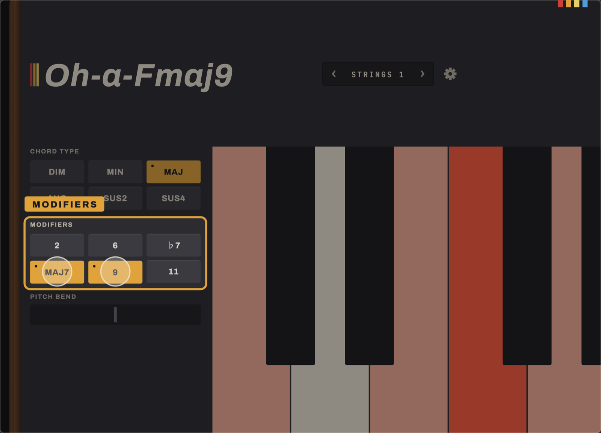
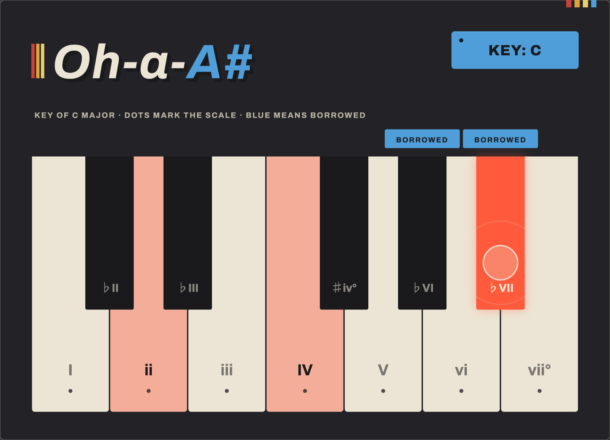
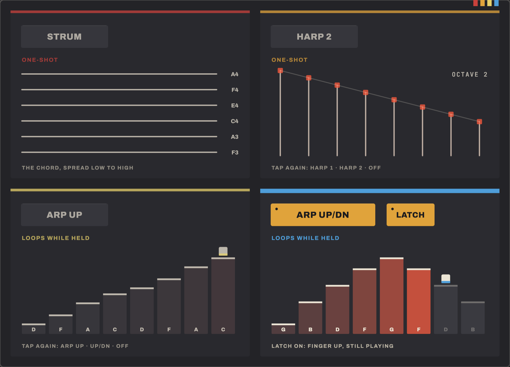
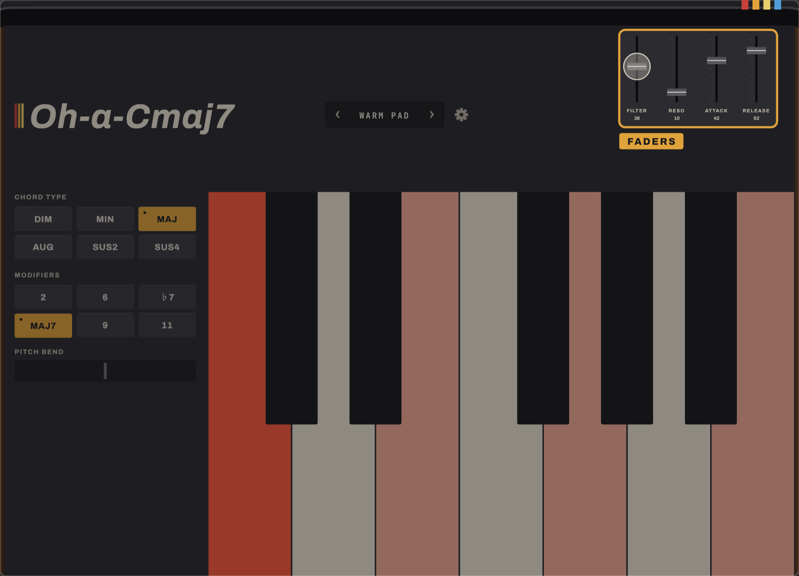

One key, a full chord
A single octave sets the root. Chord Type buttons choose Dim, Min, Maj, Aug, Sus2 or Sus4. Modifiers (2, 6, ♭7, maj7, 9, 11) stack colour on top for as long as a finger holds them down.

Oh-a-Chord is an experimental chord generating app for iPad and iPhone. It helps you break out of your songwriting rut and find interesting new chords.

Sometimes the biggest barrier to creativity is your own muscle memory. As a musician, I hit a friction point in my songwriting: whenever I sat down at a keyboard or grabbed my guitar, my hands instinctively fell into the exact same familiar shapes. I wanted to short-circuit those habits and discover voicings I’d never naturally stumble onto.
A single octave sets the root. Chord Type buttons choose Dim, Min, Maj, Aug, Sus2 or Sus4. Modifiers (2, 6, ♭7, maj7, 9, 11) stack colour on top for as long as a finger holds them down.

Arm Key Mode and the next key you press becomes the root. Select MIN first for a minor key. Every press after that stays inside that key. Reach outside it and Oh-a-Chord plays a borrowed chord that still belongs, like the ♭VI or ♭VII in a major key. It never goes silent.
It's music theory you can feel rather than study. Build a progression that works before you know why it works.

Three independent toggles turn a held chord into a part: Strum staggers the notes like a pick across strings, Harp sweeps one or two octaves, Arp cycles up or up-and-down at the tempo you set. Latch holds the chord hands-free.

Behind the gear icon sits the same 6-voice DSP core that powers Oh a Synth: oscillator, filter, envelopes, chorus. Every parameter is live and touchable. The keyboard stays where it is.

| Keyboard | Single octave; any key plays a full chord |
|---|---|
| Chord Type | Dim, Min, Maj, Aug, Sus2, Sus4 |
| Modifiers | 2, 6, ♭7, maj7, 9, 11. Momentary, held while a finger is down. Combine by holding several |
| Key Mode | Major or natural minor. Locks every press to a chosen key; off-scale keys play a borrowed chord, such as ♭VI or ♭VII in a major key, rather than going silent |
| Performance | Strum, Harp (1 or 2 octave sweep) and Arp (up, up/down). Each is an independent toggle. Latch holds a chord hands-free |
| Tempo | 40–240 BPM, drives Arp's rate |
| Voicing | Two sliders move a held chord through the register live, with no retriggering |
| Synth engine | The same 6-voice DSP core as Oh a Synth: DCO, 24 dB/oct filter, one ADSR, BBD-style chorus. Full parameter editor behind the settings gear |
| Presets | 9 factory sounds plus unlimited saved presets of your own, stored on the device |
| Platform | iPad and iPhone, landscape only, iPadOS or iOS 16 or later |
| Privacy | No accounts, no analytics, no network requests of any kind. Saved presets never leave the device |
| Price | Free |
No. That's the whole point. Press a key, hear a chord. Key Mode is there if you want to explore a key without knowing why a particular note works. It isn't required to get started.
Not yet. MIDI output is planned but not in this release. Oh-a-Chord is fully playable and self-contained today, with no setup.
Yes. Open the settings gear and change anything in the synth editor. A save icon appears. Name it and it joins the preset list alongside the factory bank.
No. Nothing about Oh-a-Chord leaves the device. No accounts, no analytics, no sync. Saved presets are a file on your device and nowhere else.
Any iPad or iPhone on iPadOS or iOS 16 or later. It runs in landscape. Chord controls sit under your left hand, keyboard under your right. On iPhone, Chord Type and Modifiers share one panel with a toggle, and pitch bend is left out to fit the screen.
On the App Store now, for iPad and iPhone.